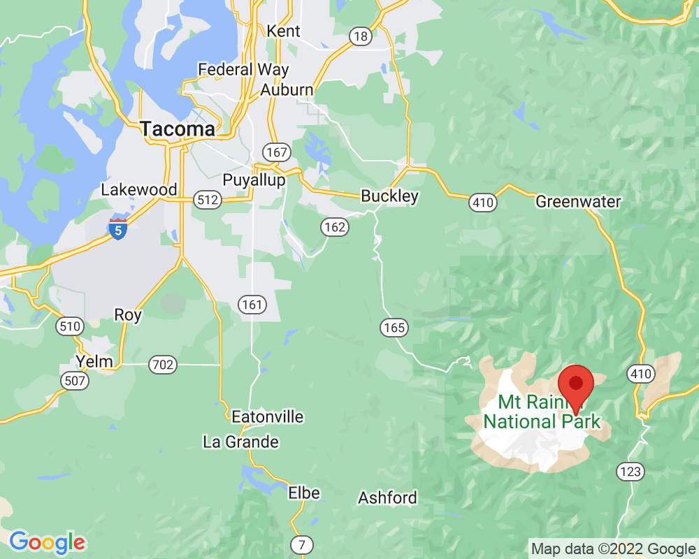

Trail reinforcement with rocks
The trail turns a sharp corner here as it goes back and forth up a steep hill. This is called a switchback.
The soil was too steep, loose, and slippery right here, so rangers built a short wall to protect the trail and keep hikers safe. Instead of going over the wall, hikers have to go around it. That way is safer and less steep.
Visited: September 23, 2022 at 10:19 AM
Location: White River Entrance/Summerland
